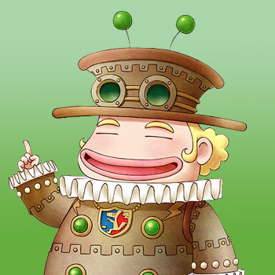

Bon Viviant



El crítico gastronómico itinerante visita Mineral Town una vez al año el 22 de primavera, el día del festival culinario anual de la ciudad. Bon es el juez del concurso de cocina, prueba con entusiasmo cada plato presentado y da su opinión sobre lo delicioso que puede (o no) ser el plato. ¡A Bon realmente le encanta la comida!.
Bon es un candidato a matrimonio especial disponible para chefs que buscan un desafío. Sus requisitos de matrimonio giran en torno a tus habilidades culinarias, por lo que buscará a aquellos que puedan dominar el festival de cocina y recopilar todas las recetas del juego.
Si logras casarte con Bon Viviant, la mayor parte del tiempo él no vivirá en la granja. Los días 10, 20 y 30 de cada temporada estará dentro del cortijo todo el día. Además, hay un 25% de posibilidades de que Bon pase por tu casa para prepararte una comida cuando entres a tu granja y Bon tenga 60,0000 LP o más. El almuerzo aleatorio puede realizarse entre las 11:00 am y la 1:00 pm, y la cena aleatoria puede ocurrir entre las 8:00 pm y las 10:00 pm.
Incluso después del matrimonio, Bon no mostrará un marcador de corazón en su retrato o en la Lista de Aldeanos (al menos en la versión japonesa).
| Cumpleaños | 21 de primavera (primaria) o 20 de primavera (alternativa) |
|---|---|
| Amistad extra | Puedes ganarte la amistad con el escurridizo Bon Viviant cocinando un plato en tu cocina. Como solo está en la ciudad una vez al año para dar un único regalo, su afecto ha ido aumentando constantemente a medida que yo cocinaba. |
| Rival | (Ninguno) |
| Horario | Cuando Bon esté presente el 22 de primavera, lo encontrarás en la mesa de jueces en Rose Plaza. No aceptará regalos hasta que termine el festival, donde estará en el banco en la esquina noreste de la plaza desde las 6:00 pm hasta que se vaya a las 8:00 pm. Puedes darle un regalo durante su visita posterior al festival. |
Preferencias de regalos
La mejor forma de mejorar la amistad y el afecto es siempre regalar las cosas que le gusta una vez por dia.
| (Ninguno) | |
|
|
|
|
|
Requisitos de matrimonio
Bonny no tiene eventos cardíacos románticos, pero hay requisitos que deben cumplirse antes de aceptar la Pluma Azul:
- Gana el festival de cocina 5 veces.
- Cocine todas las recetas de comidas cocinadas disponibles.
- Tener 60.000 LP o más con Bon Viviant
- Mejora tu casa y hazte dueño de la cama grande.
En el juego original de GBA, los pretendientes del sexy gourmet debían ganar el festival de cocina en cada una de las 5 categorías (jugo, postres, pan, fideos y arroz). En esta versión actualizada del juego, el requisito es simplemente un total de 5 victorias.
Hay 120 recetas de cocina en el juego. Se pueden aprender recetas interactuando con los aldeanos, viendo el programa Delicious Cooking los martes e inspirándose después de cocinar recetas existentes. Cada receta debe cocinarse en su cocina. Hay un trofeo en el juego , el logro Gourmet, que se desbloqueará después de haber cocinado todos los platos disponibles.
Naturalmente, el juego no realiza un seguimiento de los platos que has cocinado, así que realiza un seguimiento utilizando la Colección Goddess. La Colección de la Diosa se encuentra dentro de la estantería de tu granja y realiza un seguimiento de las comidas cocinadas que has ofrecido a la Diosa de la Cosecha. Adquiera el hábito de cocinar nuevas recetas que haya aprendido y luego arroje la comida al estanque de la Diosa para agregarlas a la colección.
Después de completar los requisitos, dirígete a la plaza después del festival de cocina y dale a Bon Viviant la Pluma Azul.